SEMANA 2
SEMANA 1
-Lo primero que vimos en la semana 1 fue el silabo de lo que haremos cada semana en clase.
En la competencia 1
Desarrollaremos una pagina web donde presentaremos proyectos innovadores

En la competencia 2
Desarrollaremos prototipos con componentes tecnològicos

En la competencia 3
Diseñaremos un proyecto innovador
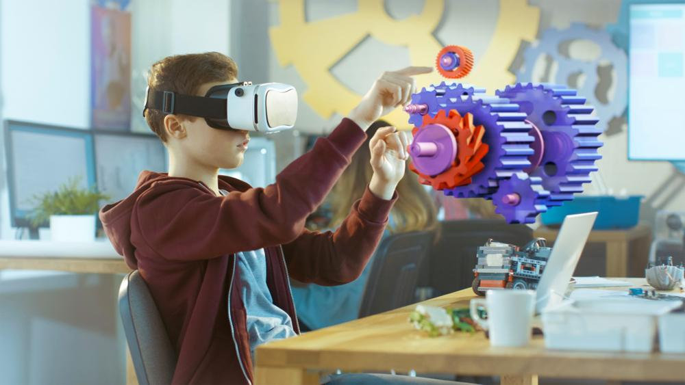-Lo segundo que vimos fueron las recomendaciones de seguridad
Recomendaciones de seguridad creatispace
1.-Usar ropa adecuada ,manga larga y pantalon

2.-Proteger los pies y utilizar zapatos cerrados
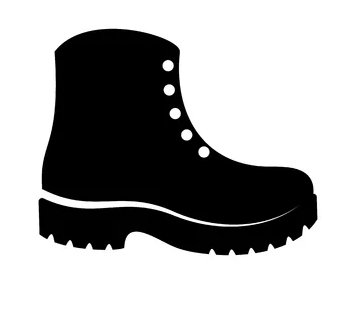3.- Usar lentes de seguridad cuando utilices las maquinas
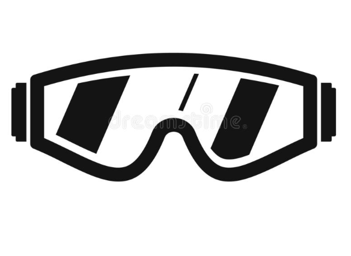4.-Usar guantes de seguridad al utilizar las maquinas

5.-Usar orejeras cuando presente ruido
6.-Evitar consumir alimentos en estos espacios
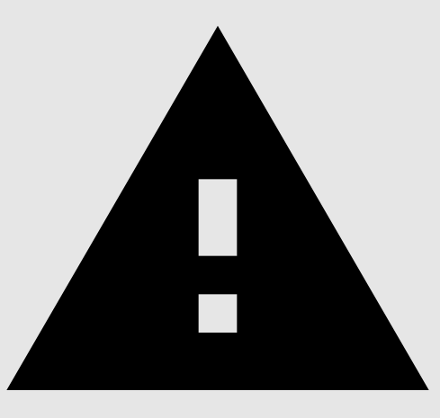-Por ultimo vimos algunos proyectos innovadores de ciclos pasados, algunos de ellos fueron:
Brush-LED
Brush-LED es un cepillo inteligente que promueve la importancia del cuidado de los niños y asi pueda incentivar el higiene bucal en los niños
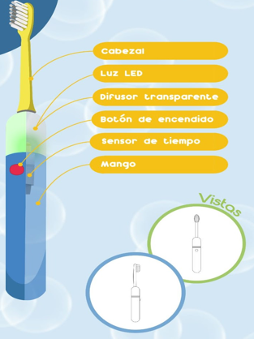Tachin
Tachin es un basurero automàtico, elaborado con materiales reciclados que puedan incentivar a botar los desperdicios

SEMANA 2
- Lo que vimos en la semana dos fueron los primeros pasos para el desarrollo del diseño web
Bitacora digital
Comenzamos a ver que es lo que era una bitacora digital, que es donde se hace los registros de forma cronològica
Se puede registrar en:
1.- Blogs
2.-Web
3.-Redes sociales
4.-Contenido audiovisual
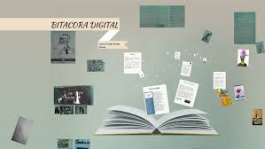Diseño Web
Consiste en implementar , diseñar los sitios web


Interfaces y lenguajes
HTML:
Define la estructura de la pàgina web
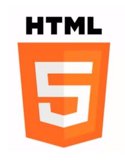CSS:
Define la presentaciòn de la pàgina web
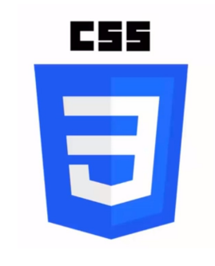JAVASCRIPT
Nos permite añadir la funciòn de una pàgina web
Editores de còdigo
Son editores visuales donde se redacta con codigos en la pàgina web
-El que utilizamos en clase fue visual studio code

Elementos y etiquetas
1.-Se usa el elemento para definir la estructura de una pàgina web
2.-La etiqueta nos permite definir en un archivo HTML
ETIQUETA DE APERTURA
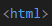ETIQUETA DE CIERRE
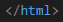Atributos
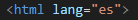Etiquetas en estructura
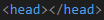 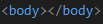Estilo en linea
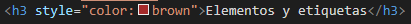Archivo CSS
Es para que se pueda definir el estilo de pàgina
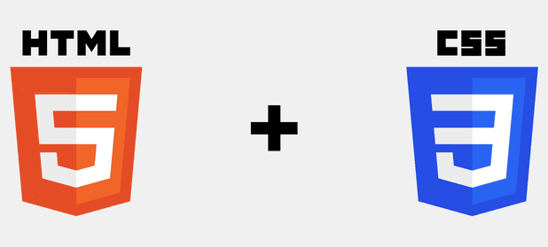